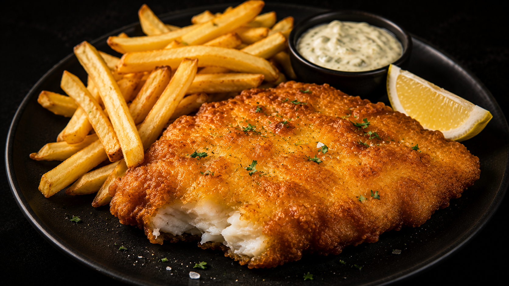
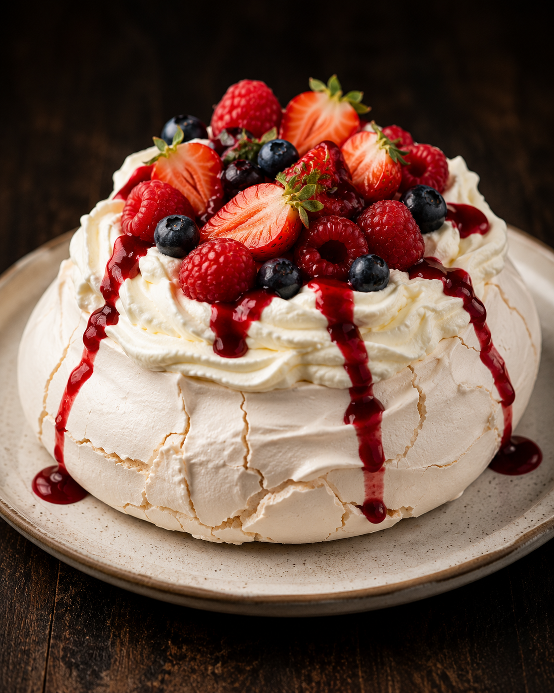

Chicken Parmigiana
A crispy golden chicken breast topped with rich tomato sauce and melted mozzarella cheese. One of Australia's most iconic comfort foods.
View Full Recipe →
Beef Lasagna
Layers of rich beef ragù, creamy béchamel and melted cheese baked until golden perfection.
View Full Recipe →
Fish & Chips
Australia's favourite crispy battered fish served with golden chips and tartare sauce.
View Full Recipe →
Pavlova
A light and airy meringue dessert topped with whipped cream and fresh seasonal fruit.
View Full Recipe →